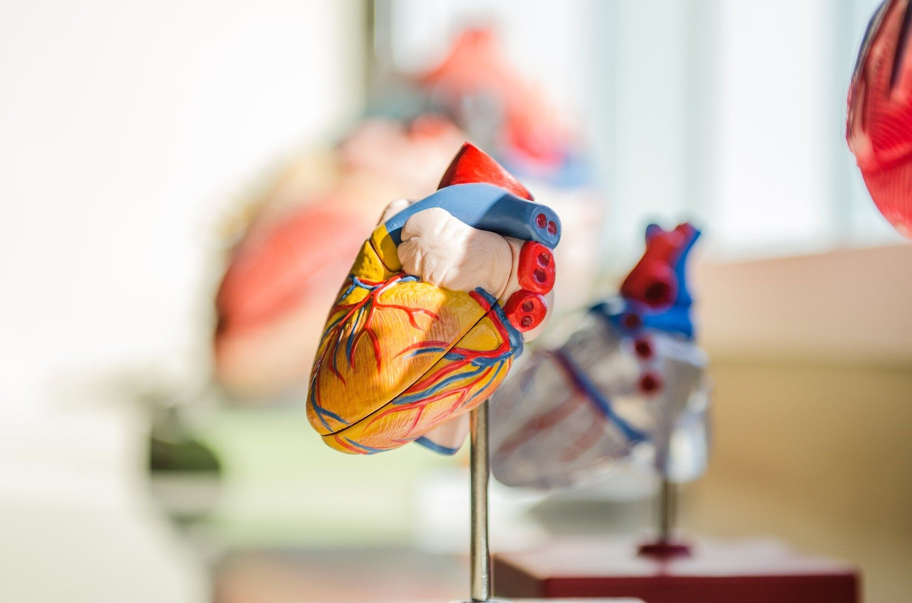

Anatomy
Look at different parts of the human anatomy to learn how it works and how it is built!
Did you know that the heart is a muscular powerhouse?
To give kids an idea of how hard it works, have them grab a tennis ball. To mimic the force of a single heartbeat, you have to squeeze a tennis ball tightly with one hand. Now, imagine doing that 100,000 times a day!
Our blood vessels are incredibly long!
If you could uncoil all the blood vessels that the heart pumps blood through and lay them end-to-end, they would stretch for about 96,560 km.
The secret about the heart sound.
Most people think the "lub-dub" sound of a heartbeat is the muscle squeezing.